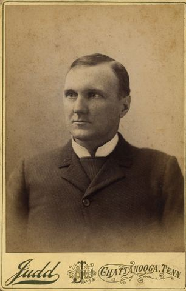
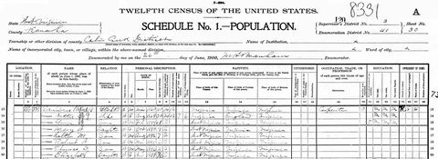
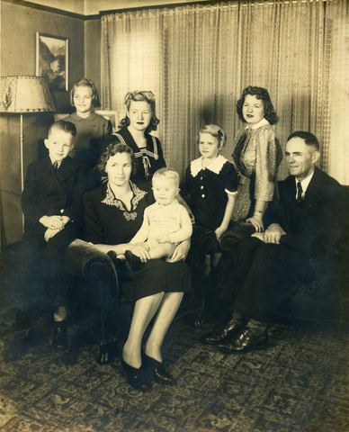
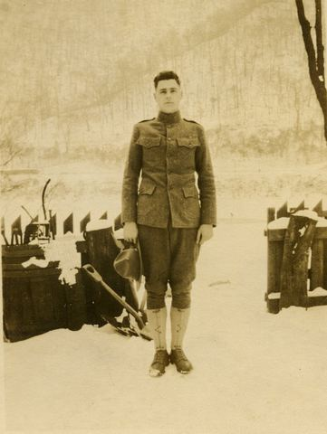
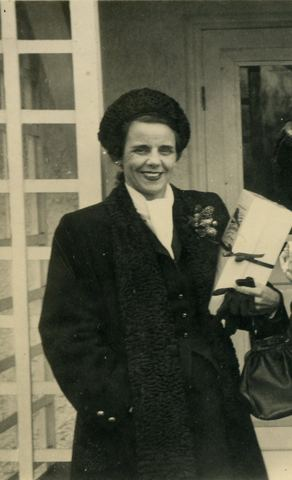

Annette Campbell 'Nettie' Straughan
1869–1927
Life events
| Born | 19 Aug 1869 · Midlothian, Virginia Map |
|---|---|
| Lived | 1870 · Chesterfield, Virginia Map · Residence Post Office: Chester |
| Lived | 1880 · Kanawha City, West Virginia Map · Marital Status: single relation to Head: Daughter |
| Married | 8 May 1888 · Robert George Saunders · Fayette, West Virginia Map |
| Lived | 1900 · Cabin Creek, West Virginia Map |
| Lived | 1910 · Kanawha, West Virginia Map |
| Lived | 1920 · Cabin Creek, West Virginia Map |
| Lived | 1924 · Charleston, West Virginia Map |
| Died | 1 Aug 1927 · Dunbar, West Virginia Map · Died at home of cancer of the stomach. |
| Buried | 2 Aug 1927 · Grandview Memorial Cemetery, Dunbar, West Virginia Map · Gravestone "Mother Dear, Nettie C. Straughan, wife of Robert G. Saunders 1870-1927.  |
Family
Annette Campbell 'Nettie' Straughan1869–1927

Robert George Saunders1860–1946
Children
 George Douglas Saunders1889–1958
George Douglas Saunders1889–1958
Mary "Welby" Saunders1890–1967
Walter Mann Saunders1892–1966 Robert "Withers" Saunders1894–1962
Robert "Withers" Saunders1894–1962
Thomas "Davis" Saunders1896–1982 Howard Alexander Saunders1898–1898
Howard Alexander Saunders1898–1898
Janet Dabney Saunders1902–1996 Philip Arthur Saunders1904–1970
Philip Arthur Saunders1904–1970
Photos
Walter Mann Saunders
Thomas "Davis" Saunders
George Douglas Saunders
Mary "Welby" Saunders
Robert "Withers" Saunders
Elizabeth "Betty" McCutcheon Saunders
+2 more

Annette Campbell 'Nettie' Straughan
Robert George Saunders
Annette Campbell 'Nettie' Straughan
Robert George Saunders
Annette Campbell 'Nettie' Straughan
Annette Campbell 'Nettie' Straughan